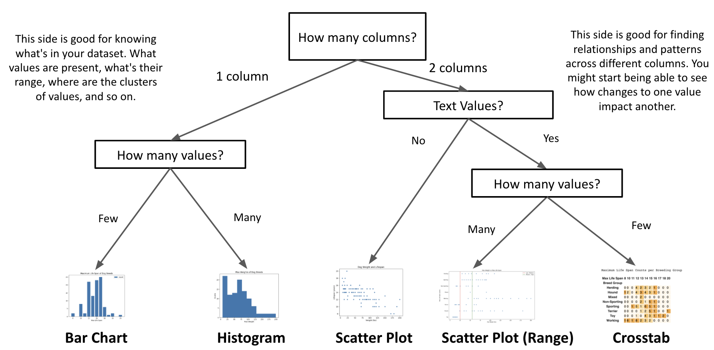
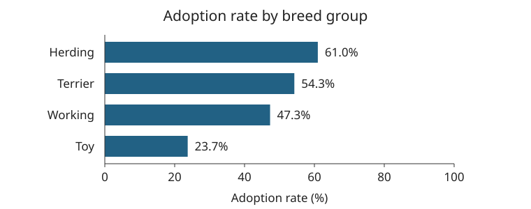

Lesson 6 - From Question to Conclusion
At the end of this lesson, you will be able to:
- Explain why data needs to be cleaned, and how cleaning choices change the data.
- Choose an appropriate chart type for a particular dataset and question.
- Analyze a dataset by stating a question, drawing a chart, and interpreting what it shows with numbers and units.
- Distinguish totals from rates, and explain why the choice can change a conclusion.
This lesson puts the whole process together, start to finish: get the data into shape, pick a chart that fits your question, and say what it shows, including what it can't show. It's also exactly the process the Week 8 Assignment asks for, so think of this lesson as a dress rehearsal.
Student dataset
So far we've been turning tables into charts as if that were the easy part, and with the dog data it mostly was. But real data almost never shows up clean and ready to chart, and what you can do with a dataset depends a lot on how it was collected, and how carefully.
So before we go any further, let's talk about getting data into shape. Take a look at the student dataset below. Could we chart it as-is? What problems do you spot?
Show Solution
- A column that should hold numbers has both 'six' and 6 in it.
- Some cells are empty.
- 'i like food' is not a valid major.
- The same thing is spelled two ways: Junior and Jr.
Cleaning data
Let's take those problems one at a time, because each one breaks a chart in its own way.
Mixed types. A column with 6 in one row and "six" in another looks harmless to a person. But when pandas reads in this CSV, that one word can make it decide the whole column is text instead of numbers, and then you can't take an average or draw a histogram of it until somebody deals with the word. And if you count the values as they are, "6" and "six" show up as two different answers. The student meant six either way! It's just written in a form the computer can't do math with until somebody fixes it.
Missing values. Empty cells come in as a special "no value here" marker (pandas calls it NaN, short for "not a number"). By default, pandas just skips those when it calculates an average, which sounds convenient, and it is, right up until you forget it's happening. If a quarter of the students left their age blank, the average age is really "the average age of the students who answered," and that might not be the same thing. (Remember the difference between "unknown" and 0 from Unit 5? Here's where it comes back. If someone filled the blanks in with 0, the average would come out wrong in the other direction.)
Invalid entries. "i like food" is a reasonable thing for a person to type into a box labeled "Major," and it's obviously not a major. There's no way to fix this automatically. Someone has to decide: drop the row, mark the major as unknown, or go back and ask. Each of those is a judgment call, so write down which one you made.
Inconsistent spellings. "Junior" and "Jr" mean the same thing to us, but to a computer they're two different strings. So a bar chart of class standing would show two separate bars, each one shorter than the real number of juniors. Nothing crashes, nothing warns you. The chart just undercounts, and it looks completely believable.
Nearly every dataset you'll ever meet has problems like these. Finding and fixing them before you analyze anything is called cleaning the data, and working data scientists will tell you, usually with a sigh, that it's most of the job.
There's one more source of mess that's worth knowing about, which is combining tables. Suppose the registrar's office records majors as "CS" and the tutoring center records them as "Computer Science". Each table is consistent on its own. But stick them together to ask "do students who use tutoring do better?" and suddenly you have two spellings for the same major, and nobody did anything wrong.
Most of these come down to the same thing: people entered the data, and people are inconsistent. The same person might type "Math" one day and "math" the next. That's not a failing on anyone's part. It's just what happens when free text meets a computer that compares strings character by character, the same thing we ran into with .lower() and .strip() back in Unit 5.
Cleaning usually means picking one standard form and converting everything to it: all lowercase, one spelling for each category, numbers stored as numbers. But here's the part that matters more than the code. Every one of those choices changes the data, so if you clean something, you should say what you did. "We combined Jr and Junior, and dropped 3 rows with no major" is one sentence, and it lets anyone reading your chart know what they're looking at.
Some of this can be headed off at collection time. If a field really does have a fixed set of choices, a well-labeled dropdown stops "Junior" and "Jr" from both showing up. But a dropdown also shuts out any answer the designer didn't think of, which is the same tension we met in Unit 5: consistency on one side, and an honest way to record "unknown," "unsure," or "none of the above" on the other.
Chart types
At this point we have a little toolbox of charts: bar charts, histograms, scatter plots, and crosstabs. The notebooks can make any of them in a line or two of code, so making a chart isn't really the hard part anymore. Picking one is! And a chart that doesn't fit your question won't crash or give you an error message. It'll just show you something that's hard to read, or, worse, something that looks like an answer to a question you didn't ask.
So how do you pick? It comes down to three things: what question you're asking, what kind of data is in the columns, and whether you're looking at one column or two. Lessons 4 and 5 covered what each chart is good for, and here's the short version as a flowchart.
One warning about the diagram: its "string" branch really means "labels," and sometimes labels are stored as numbers (remember the bus lines and zip codes from Lesson 1?). So use it as a starting point, and let the question you're asking have the final say:

Walking through a few questions
Let's try the diagram out on some questions about the dog data, and see how it lands on an answer.
"What's the most common breed group?" That's one column, Breed Group, and it only has a handful of values (Herding, Hound, Toy, &c.). One column, few values: a bar chart, one bar per group.
"Are most breeds small, medium, or large?" Still one column, Max Weight, but it has values all the way from 7 to 200 pounds. For this particular question, first sort the weights into the three sizes (under 25 lbs, 25–55 lbs, and over 55 lbs), and then make a bar chart of those three counts. If you just want to see the overall shape of the weights, a histogram is the better fit, and its bins don't have to line up with those three sizes at all.
"Do heavier breeds tend to have shorter life spans?" Now it's two columns, Max Weight and Max Life Span, and both are quantitative, so this calls for a scatter plot with one dot per breed. If the dots drift downward from left to right, that's a pattern to talk about (and, as we saw in Lesson 5, a pattern that doesn't tell you why all by itself).
"Which breed groups have the longest life spans?" Two columns again, Breed Group and Max Life Span. There are only a handful of groups and a small number of different life spans, so we can count every combination in a crosstab, which is exactly the crosstab from Lesson 5.
Did you see that the question came first every time? The same dataset gave us four different charts, because we asked four different questions. If you ever catch yourself making a chart and then trying to figure out what it's saying, back up a step and write the question down first.
One last thing. Sometimes more than one chart could work, and that's fine. A histogram of life spans and a bar chart of life spans would both be reasonable, since life span has a smallish number of values. When that happens, pick the one that makes the answer easiest to see, and be ready to say why you picked it.
Practice: Now try it on a brand-new dataset. These two notebooks use data about Beatles songs (popularity, danceability, energy, &c.). In Part 1, you write some questions about one column and pick a chart for each. In Part 2, you do the same thing for two columns. Make a copy of each one before you start.
Data Analysis and Quantitative Reasoning
You might see the phrase quantitative reasoning in the Week 8 Assignment. It means "using math and information to solve real-world problems," which is a fancy way of describing what we've been doing all unit. So let's put all the pieces together in one worked example: ask a question, pick a chart, and say what it shows.
A written example: counts or rates?
We'll walk through the same six steps the Week 8 Assignment asks for, using a practice file about dog adoptions. Everything you need is right here in the text, and the videos further down are optional extras. Watch out, because this file is not the 105-breed table we've been using! In this one, each row is a breed with two counts: how many dogs of that breed were available for adoption, and how many got adopted. And we can add those counts up for each breed group.
1. Start with a question and a prediction
Which breed group has the highest adoption rate in this file? Before calculating anything, I'm going to guess that the group with the most adoptions will also have the highest rate. That's a guess we can actually check, and you can probably already see how it could go wrong: a group could have more adoptions just because it had more dogs available in the first place.
2. Identify the information needed
We need three columns: Breed group, which is categorical, and two counts, Total Dogs Available and Number of dogs adopted. For each group, we add up the available dogs and the adopted dogs, and then calculate 100 * adopted / available to get a percentage. Why add up the counts first, instead of averaging each breed's percentage? Because the breeds have different numbers of dogs, and a breed with 3 dogs shouldn't get the same say as a breed with 40.
It's also worth a quick sanity check before dividing anything. Are both count columns actually numbers? Is every "available" count above zero? Are there ever more adoptions than available dogs? This file passes all three. (If a group had zero dogs available, its rate wouldn't be zero, it would be undefined, and the honest thing to do would be to say so.)
totals = df.groupby("Breed group")[["Total Dogs Available", "Number of dogs adopted"]].sum()
totals["Adoption rate (%)"] = (
100 * totals["Number of dogs adopted"] / totals["Total Dogs Available"]
)
print(totals.round(1).to_string())This code goes after the notebook's data-loading cell. groupby gathers up the rows that share a breed group, sum() adds up their counts, and the last line calculates one rate for each group. Take a look at the result before making any chart:
| Breed group | Dogs available | Dogs adopted | Adoption rate |
|---|---|---|---|
| Herding | 82 | 50 | 61.0% |
| Terrier | 94 | 51 | 54.3% |
| Toy | 118 | 28 | 23.7% |
| Working | 93 | 44 | 47.3% |
3. Choose a representation
A bar chart fits here: there are four categories, and each one has a single number. So put breed group on one axis and adoption rate (%) on the other, start the rate axis at zero (remember Lesson 2!), and label the bars. A scatter plot would be answering a different question, like whether breeds with more dogs available also had more adoptions.

4. Interpret with numbers and units
Herding has the highest rate: 50 of its 82 available dogs were adopted, about 61.0%. Terrier has the most adoptions, 51, but 51 out of 94 is only about 54.3%. And Toy had the most dogs available, 118, but the lowest rate, 28/118, or about 23.7%. Notice how much it matters to say which measure you mean. "Herding did best" leaves your reader guessing, while "Herding had the highest adoption rate in this file" says exactly what we calculated.
5. Compare the result with the prediction
So my guess was wrong! The group with the most adoptions and the group with the highest rate aren't the same. That answers our question about this file, but it doesn't explain why the groups are different. Maybe some groups got more publicity, or had dogs of different ages or with different care needs. Maybe the counts come from different shelters or different stretches of time. None of that is recorded in the file, so we can't tell.
And just like in Lesson 5, a pattern isn't a cause. The fact that Toy breeds had a lower rate doesn't show that being a Toy breed is the reason. To look into that, we'd need things like when the data was collected, which shelters it came from, and how long each dog was available. This practice file doesn't even say how it was collected, so treat the results as practice at reading a sample, not as facts about adoption everywhere. (This is one way it's different from the breed table, by the way: these percentages really are about individual dogs, not breeds.)
6. Ask who could use the result
Finally, who could use a result like this? A shelter might use a carefully collected version of it to figure out where adopters are running into barriers, or where to offer more support, and those decisions would affect staff, adopters, and the dogs themselves. A low rate should make you ask questions about the adoption process, not label a group of dogs as "unwanted." You'd also want to know who supplied the records, how they counted mixed breeds, what counted as "available" and "adopted," and which dogs got left out. This sample can't answer any of those, so it isn't enough by itself to decide where a shelter should spend its money.
And that's the whole analysis: a question, a guess, the columns we needed, a chart that fits, an answer with numbers in it, and an honest statement of what the answer can't tell us. Python did the adding and dividing for us, but it couldn't have told us to divide by the dogs available instead of just reporting counts, or that a file with no information about how it was collected can't speak for every shelter. Those were our calls.
Totals or per person? An environmental example
The counts-or-rates question from the adoption example shows up in one of the biggest environmental debates there is. Which country emits the most carbon dioxide? If you measure total emissions per year, the answer is China, by a wide margin; it has been the world's largest yearly emitter for well over a decade. But China also has more than four times as many people as the United States. Divide by population, and the average person in the United States is responsible for far more CO2 each year than the average person in China, recently somewhere around one and a half to two times as much.
Neither number is a trick; they answer different questions. "Where are the most emissions coming from?" and "how much does a typical person's life emit?" are both fair things to ask. (There's even a third answer: add up emissions since the 1800s, and the United States has emitted more than any other country.) People tend to pick whichever measure supports their side, so whenever you see an environmental ranking, ask the Lesson 2 question: counts or rates, out of how many, and over what time? Our World in Data lets you switch between all three views of the same data.
Housing data example
If you'd like to see another analysis from start to finish, the optional video below works through a California housing dataset, building charts and reading them. Here are the notebook and spreadsheet it uses, if you'd rather poke at them yourself:
- Make a copy of the Google Colab notebook.
- Housing spreadsheet
Sample video for Week 8 Assignment
This second video, also optional, shows the kind of analysis the Week 8 Assignment is asking for.
Practice activity
Before you start the Week 8 Assignment, do this practice run:
- Open the QR Sample dataset, which has the adoption data from the worked example.
- Open the QR Sample Colab notebook and make a copy.
- Following the worked example above, make two charts in the notebook: one of adoption counts and one of adoption rates. Then explain why the two charts put the groups in a different order. (The optional video can help here too.)
- Now try the same thing with the dataset you picked from the Data Is Plural archive for the Week 8 Assignment. This practice run is exactly the kind of analysis the assignment asks for.